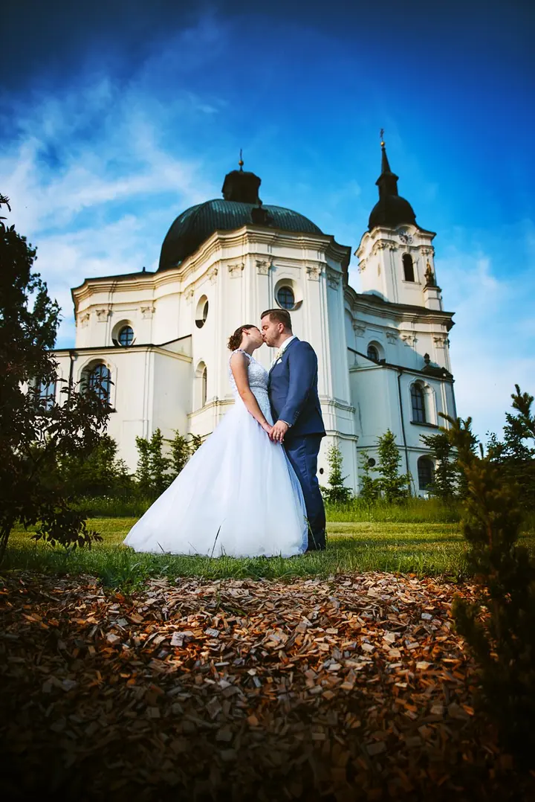
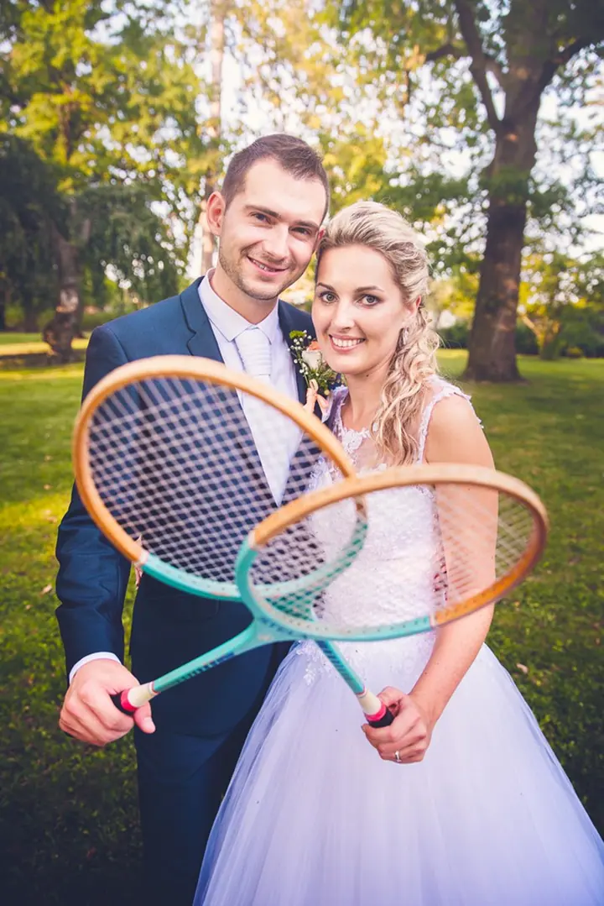
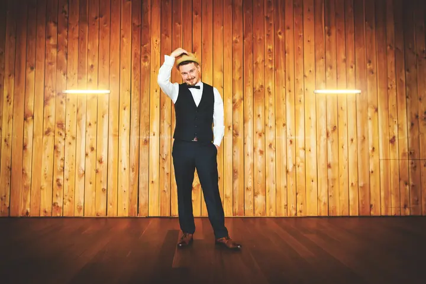

jedna
Svatební focení
Celý svatební den v základním setu na 7 hodin nebo ve velkém setu na 10 hodin. Chovám se jako váš starý známý a přitom splývám s davem, takže nenarušuji dění.

Svatební fotograf · Brno a okolí, po celé republice

Jmenuji se Filip Blažek a jsem svatební fotograf z Brna. Na svatbě se chovám jako váš starý známý, a přitom splývám s davem a nenarušuji dění. Fotky neupravuji jedním filtrem, barevnost ladím podle pocitu z vaší svatby.
Více o mně
Co fotím
jedna
Celý svatební den v základním setu na 7 hodin nebo ve velkém setu na 10 hodin. Chovám se jako váš starý známý a přitom splývám s davem, takže nenarušuji dění.
dvě
Hodinové focení pro jednotlivce i páry. Hodí se i jako předsvatební focení, kde si před kamerou všechno vyzkoušíte nanečisto.
Fotím plesy a reportáže a po domluvě i sportovní akce, rauty nebo tabla. Cenu stanovím individuálně podle počtu fotografií a délky focení.
Osmihodinový kurz, na kterém se s vámi podělím o zkušenosti, které jsem za léta focení nasbíral.

Barevnost ladím podle pocitu z vaší svatby.


Za objektivem
Focení se věnuji zhruba od roku 2008 a v roce 2011 jsem začal pomalu podnikat. Za tu dobu mám za sebou 165 svateb a přes 20 tisíc hodin u retuše, takže mě na svatbě snad už nic nepřekvapí. Fotím hlavně v Brně a okolí, ale rád za vámi vycestuji i dál po republice.
Mnohem důležitější než samotný obor focení je pro mě přístup k lidem. Snažím se za všech okolností udržet pozitivní náladu a příjemnou atmosféru, protože jedině tak spolu dokážeme dojít ke kvalitnímu výsledku.
Osobně nemám rád škrobené pózování. Raději pracuji s energií novomanželů, snažím se ji svým přístupem ještě znásobit a vymýšlím pro vás nové situace. Pomůžou i rekvizity, které souvisí s vaší prací nebo koníčky. Díky nim se rozhýbou i ti, kdo se fotit moc rádi nenechávají.
Filip
Když se dohodneme, vystavím vám fakturu na zálohu 50 % z ceny balíčku s týdenní splatností. Po jejím zaplacení máte termín závazně rezervovaný.
Zhruba 2 až 3 týdny před svatbou se sejdeme a projdeme harmonogram, skupinové focení i místo pro vaše portréty.
Fotím nenápadně a nenarušuji dění. Na portréty vyrazíme ideálně večer, asi hodinu a půl před západem slunce, kdy je nejhezčí světlo.
Všechny fotky kompletně upravím a vyretušuji, barevnost ladím podle atmosféry svatby. Předám vám je na flash disku v dřevěné krabičce.
Portfolio
Otázky
Základní set na 7 hodin stojí 15 000 Kč, velký set na 10 hodin 18 000 Kč. Za dopravu mimo Brno účtuji 10 Kč/km na cestu na místo focení.
Na portréty novomanželů doporučuji 45 až 90 minut, a pokud se natáčí i video, ještě o 30 minut víc. Na skupinové fotky stačí asi 20 minut pro 50 lidí, u stovky hostů počítejte se 40 minutami.
Vůbec ne. Můžeme si dát portrétní focení ještě před svatbou, abyste si to vyzkoušeli a na kameru si zvykli. Na samotné svatbě vás pak nic nezaskočí.
Ano. Fotky neupravuji jedním filtrem, barevnost obvykle ladím podle pocitu ze svatby, ale klidně si ji můžete vybrat sami.
Ke svatebnímu balíčku si můžete objednat fotoknihu formátu A4 na šířku s 50 stranami v tvrdé vazbě. První kus stojí 2300 Kč, každá další kopie 2000 Kč. Předání fotek se tím posune o 8 až 10 dní.
Napište pár vět o tom, co si představujete. · +420 723 950 278